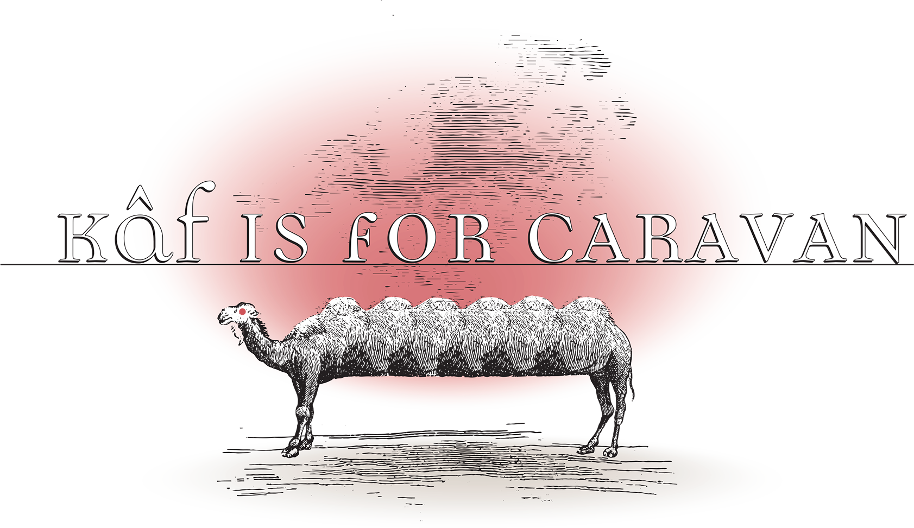
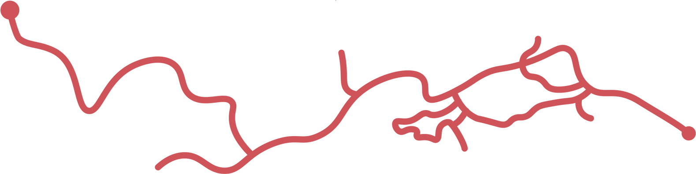

Kâf’s Phoenician predecessor, also a K sound, was Kaph, one of the letters whose name has a meaning: the hollow of the hand, the palm. The word (kaff) survived in Arabic and the usual companion languages. In Persian poetry a glass of wine is traditionally held in the kaff. The constellation we know as Andromeda was once called in Arabic The Hand decorated with Henna, Al-Kaff al-khad͎îb, الکفّ الخضیب. (Khad͎ab is one of two words for henna, the other being the more recognizable h͎innâ’.) A kaffa is the pan of a scale or balance. The dual form of the word, kiffatân, is our constellation Libra.
A kalb is a dog; Al-kalb al-asghar is Canis Minor. (Canis major is Al-Kalb al-akbar.) The constellation we call (misleadingly) Crater (Latin for bowl or cup) is Al-Ka’s, the bowl or goblet. The etymological origin of Kochab, the second brightest star in the Little Dipper (Ursa Minor), is contested, but if it’s an unimaginative origin (always a possibility), it may come from kawkab. (A kawkab is a star.)
Kâf is pronounced like our K, and it has a shape which seems to show a distant family relation to it. The straight line of ک , rising slightly rightward from the top of the upright, called in Arabic the ra’s (head), in Persian the sarkesh (the line “pulled” – keshideh – upward), looks familiar to us. (It gives us two thirds of our three-stroke letter K.) Looking at the various shapes it takes in Nabataean, I’m puzzled how it got there.
That nearly horizontal extension, the line that gives it its personality, rising at various possible angles, is present when ک appears at the beginning of a word, or the middle. One is taught to draw the upright, its mast, as a simple, erect vertical line, but in practice the upright is more frequently folded down to the left, or even bent over horizontal, parallel to the base line, as if it were the first step in making a paper clip. If it’s followed by an upright (Alif or Lam), it may be a complete circle.
At the end of a word, Arabic Kâf loses the horizontal, the sa’r, and becomes ك , something like backwards L, simply an upright rising from a slightly curved extension with a long foot running along the base line. Then you add a little mark like a miniature 2 (which resembles a Hamza), floating above the base. Persian script is different. Its terminal Kâf loses the little Hamza shape and retains the spar. The Persian adaptation is said to have a practical use—to distinguish Kâf (ك ) from Lam (ل) when writing rapidly. In both cases terminal Kâf sits solidly on the line.
Arabic Kâf (like Fâ) can have a meaning on its own: as a one-letter word in Arabic, attached to its neighbor like a prefix, it means “like” or “as.” It’s also popular as a suffix. At the end of an Arabic word it marks the second person possessive: -k is “your” (-kum in the plural). Thus Salâm ‘alayk or Salâm ‘alaykum. Kâf plays an even more nearly ubiquitous role in Turkish in the infinitive suffix (ending in –mek or –mak). In Persian, –ak is a diminutive suffix, as in cheshmak, چشمک, a wink (from cheshm, “eye) or bâdbâdak, بادبادک, a kite (from bâd, “wind”).
Kâf words in Persian often suggest the tiny and cute: kudak, کودک an infant, kuchek, کوچک, small, and kuchelu, کوچولو, smaller still. Kam, کم, is “a little,” or “not enough.” But Kâf is also for kabîr, “great,” which we are likely to know from the comparative form, akbar (as in Al-kalb al-Akbar). The comparative also has a feminine form, kubrâ’, which to English ears seems a little startling when we hear it as a woman’s name.
A kolak in Turkish (from kol, “arm”) is a person with one arm, a definition extended to a left-handed person as well. Words for the incomplete or defective, as perceived within a culture (i.e., as a cultural convention -- what’s wrong with being left handed?) are often sources of pride as well. Turkish kör (Persian kur) is “blind.” One of the great heroes of Turkish heroic tradition is Köroghlu, a kind of Robin Hood figure whose horse Kırat is equally famous. His father was blinded by a sinister ruler, which explains his name (son of the blind man) and sets the plot in gear.
Keloghlan (Keloğlan) is in Turkish a trickster figure, bald with skin disease (ringworm?), who rises from poverty through cunning. There is a folk story in which he steals Köroğlu’s horse Kırat. Turkish köse, a man who cannot grow a beard, traces back in prehistory, as a mythological figure in Turkic cultures who represents the Spring, remembered in spring fertility rituals. There is a historical figure, Köse Mahal, a Christian who converted to Islam in the early in 14th century and became an official under Osman 1, at the founding of Ottoman power.
Abbas Milani’s memoir of his experiences during the late 70s in Iran, Tales of Two Cities: A Persian Memoir (1996) includes an account of his experiences in prison. Milani is a political scientist, so he had at least one positive experience, an opportunity for research: the religious figures who would be the dominant forces in Iran after 1979 were in the same cell block (but in cells “strictly segregated by ideology”—160). Milani’s cell was close enough that he could witness the hierarchy among them (displayed for instance in the order in which they lined up to pray). One of the religious figures, Hashemi Rafsanjani, later in a position of particular power, was a special case.
As a short, beardless man, Rafsanjani had to surmount a serious cultural obstacle. Beardless men are called kuseh in Persian. It is a word layered with connotations of calculated brutality, synonymous with a shark, a powerful adversary who creeps up quietly on his target and then with a sharp, determined move takes down the enemy. The last ruling kuseh in Iran was Agha Mohammed Khan, the founder of the Qajar dynasty in the eighteenth century, who helped forge national unity and end long years of internal strife. Yet he is notorious for his brutality. Apocryphal though the story may be, it is commonly believed that once, angered by the stare of an inhabitant of the city of Kerman, he ordered his soldiers to gouge out the eyes of forty thousand inhabitants of the unfortunate city. (173-74).
I hope the story of Aqa Mohammad Khan’s pyramid of eyeballs isn’t true. (It’s definitely exaggerated, though the story that Aqa Mohammad Khan was castrated as a boy is not in doubt.) We know history is cruel, or rather the individuals who make it. Cruel now as then. The comparable history of Ghenghis (Changiz) Khan’s son Tolui Khan making a massive pile of human heads in Nishapur in 1221 is not in doubt.
Kâf name Kerman, today, is a quiet provincial city between Yazd and Zahedan. (The city in California named Kerman enjoys similar weather, but there is no etymological connection. Kerman, California, was founded in the 19th century by two entrepreneurs, William G. Kerckhoff and Jacob Mansar, combining the first syllables of the two last names. The etymological source of the Iranian Kerman is debated, but it is probably not the origin suggested in the folk etymology: kerm, from “worm.”)
A kuh in Persian is a mountain, as in Kuh-e Nur, “mountain of light,” name of the diamond with the famous trajectory from somewhere in India through a series of royal families until it reached its current destination, under lock and key in the Tower of London.
Kashgar, today in western China, near the border of Tajikestan & Kyrgystan, is in fact a Qâf word (Uighur قەشقەر). The -gar part traces back to an old Indo-European stem which means kuh.
Kâf word kâfir is an unbeliever. The (also mountainous) province of Kafiristan (now Nuristan) was considered a home for non-Muslims because of the name, but in fact it traces back to a tribal name Gabarik (Baburnama, 484n34).
Arabic کیف, kayf, is “condition,” “mood,” also, specifically, a good mood or well-being. The same word is, used as an interrogative, “how.” (Thus Arabic Kayf ḥâluka, “how are you,” the same ḥâl as in Persian Ḥâl-e shoma che-ṭowr e?”) A Turkish cognate, keyif, has considerable range: “pleasure,” “delight,” “joy,” and also “disposition,” “health,” “condition” and also “arbitrariness,” plus the unpredictable “intoxication,” and, as an adjective, “a little drunk, hilarious, tipsy.” Somehow it developed an -ir suffix and entered English as the term for a fermented milk drink something along the line of a smoothie (perhaps the -ir is related to köpürmek, to stir froth or foam?). And so it is that the word kefir appears on perfectly respectable bottles with an innocent dairy product inside. Nothing to do with unbelief. Nonetheless, it still looks very strange to see the word “Kefir” on a bottle, as you pass by the dairy aisle of the grocery store.
After the scene in Babur’s memoirs in which he takes Kabul, in 1504, he turns immediately (in the Thackston translation) to eighteen pages of description– the districts, the weather, the fruits, gardens. Later, there would be poetic validation: a poem by the 17th-century poet Ṣâ’eb which makes you suspect that the city was indeed beautiful. (The poem hasn’t been completely forgotten. Tony Kushner’s 2022 play Homebody/Kabul opens with a recitation of it.)
Babur observes that in Kafiristan they pronounce k as gh. Kabul, however, dialectical pronunciation aside, is a Kâf name.
Kâf is for Kufa, a city to the south of Baghdad (more or less in the location of the Sassanian capital Ctesiphon, said to have once been the largest city in the world), was the capital city designated by the fourth caliph, the Prophet’s nephew ‘Ali, assassinated there in 661. Indeed, Kufa has undergone way too much history for its own good. Even its innocent industries have been drawn into political discourse: the kind of scarf called a keffiyeh in English, was strictly speaking a kûfiyya, a product woven in Kufa. There’s no way around it: it’s an artifact with an attitude, a national dress, perhaps a uniform, in danger of being co-opted. British-Palestinian rapper Shadia Mansour (First Lady of Arabic Hip Hop) makes it clear in her song الکوفیة عربیة, “Al-Kufiyya ‘Arabiyya,” “The keffiyeh is Arab,” or perhaps “The keffiyeh is for Arabs.” It isn’t an item of fashion, but it’s in danger of becoming one. “Give us back our culture; give us back our dignity,” our کرامة, our karâma.
Kufa became a center of philosophy early in the history of the Islamic world. Another widespread innovation was the script which has come to be called Kufic (named in the early 19th century by the German scholar Jakob Georg Christian Adler). What we call Kufic was an early development, once the preferred script for the Qur’ân. It shows rather thick lines, with minimal curves, the tips of Alifs and Lams straight across, less rounded, more nearly squared off. The letters may look more separate from one another, less insistently cursive than what we have become used to, maybe even a little harder to tell apart.
It is possible to take the straight edge further, and make an alphabet entirely of right angles, formed out of square tiles. With enough of them you can approximate curved lines. Or you can reshape tiles into curved edges; or you can paint and glaze them. But if you keep decreasing the number of tiles, and limit yourself to squares and rectangles, the requirement for ingenuity presses in harder and harder.
For those of us who remember the font of the American Standard Code for Information Interchange, ASCII, there may arise a parallel question about the Roman alphabet: what is the smallest amount of variation we need which will allow us to tell the letters apart? What is the minimal number of components (dots, squares, pixels) you might use to form a recognizable letter -- and from there how many does it take to produce an entire alphabet?
It’s like the question we might ask about the display we see in elevators, where the numbers of the floors are distinguished with only seven straight lines (three horizontal, four vertical). Seven is all you need to form a simplified version of any of the ten digits. I suspect seven is the lower limit. Perhaps there’s some mathematician who could do it with less. I doubt it. The ASCII font was not an absolute minimum to produce a full keyboard of Roman letters (without diacritical marks), but it came close. The standard dot matrix for a single character is 35 pins (five by seven). I have never seen an ASCII font for Arabic (though the Arabic letters do have Unicode numbers). I suspect it would be bigger. (Indeed there was a cunning art through which you could compose Arabic phrases made out of a few lines of Roman letters, but it required a lot of them.)
Kufic script transformed to pixel level, down to the minimum, does in fact exist, in the art of what we now call کوفی بنّائی , Kûfî bannâ’î, “builder’s kufi.” (In the past it didn’t need a name.) You see those forms occasionally in texts assembled from tiles on the surfaces of public places (mosques, memorials, palaces), where the letter shapes are stripped down and squared off. No more curving shapes, usually no dots. The ingenuity required to form those letters has a distinct effect: letters of square tiles lose the sense of floating, of being unbound by gravity, which characterizes the Arabic script we are taught.. Kûfî bannâ’î substitutes the appeal of geometric precision.
A good example is on the portal of the 15th-century Mosque of Al-Mu’ayyad Shaykh in Cairo where there is a very elegant rendition of the first ten words of the shahâda. It takes up 484 squares (22 by 22). This includes a border or frame of 86 tiles, necessary for legibility. (In truth, some of the tiles are double-length, so strictly speaking we are counting squares rather than tiles.) The letters of “Allah” occupy a rectangle of 49 tiles, seven by seven. The Mim of “Muhammad,” a tight circle when it’s formed with a pen, requires nine squares in “Kufi bannâ’î,” eight black tiles in a square around a white one. The name altogether takes 65 tiles – thirteen by five. (See Wheeler Thackston’s “The Role of Calligraphy” in The Mosque, p. 42 https://ssmith.people.ysu.edu/islam/Thackston-Calligraphy-42-53.pdf ).
That mix of esthetic qualities (on the one hand, its tactile appeal, with hard-edged, resistant material, ceramic or terra cotta, and, on the other hand, the appeal of the abstract -- because its shapes solve an intellectual puzzle), forces us to abandon the cursive track of the reed pen, whose medium is not just ink but motion. The reed pen allows us to sense the moving hand that produced it. The transition to straight edges and right angles removes the feeling of flight and freezes it in place. Perhaps the term is “monumental.”
The dome over the shrine of the Sufi saint Shâh Ne‘matallah Vali in Mahan, south-east of Kerman (not hard to find on-line), displays two bands of letters in squares, something like scrawls or chyrons on a tv screen, with devotional phrases instead of news. Permanent news. The height of five tiles is an absolute minimum, since it allows a base line and two horizontals overhead. You can find a Kâf in slightly different spots on both bands — in two appearances of “Allahu Akbar, in both of them a right-angled S (or 5) shape five tiles high (altogether eleven white tiles in a rectangle five by three).
The dot marking a Bâ in akbar, by the way, is included, but overhead rather than underneath. The Râ doesn’t venture beneath the base line as you might expect; it just extends it horizontally. (The base line is alphabetical rock bottom. It must have been mesmerizing to devise and to assemble them. It is easy to imagine a devotional impulse in the slow placing of the tiles.
L LL L L
L L
L LLL L
L L L
LLLLLLLLLL L
[اکبر]
The Kufic designs on the Iranian flag, designed by the architect Hamid Nadimi, include the Shahâda in the center and “Allahu Akbar” repeated in a row, also five squares high, for a border. His “akbar” is quite different: the Alif lies horizontal along the top; the Kâf is minimal, simply a horizontal stretching three squares to the left (not to the right, as we would see in writing). The line of the Ba is raised to allow the dot underneath; the raised base line allows Râ to take a vertical orientation three tiles high.
LLLLLLLLLLLLLLLLLL LLLLLLLL LLLLLL L L L L L LLLLLLLLLLLL
You can get used to them, but if the shapes of “Kufi bannâ’î” are new to us, I suspect they won’t be legible unless we know the phrase in advance. (In Wheeler Thackston’s summation they are readable, not legible”—The Mosque, 45).
Kâf location Kish, a small island just off the south coast of Iran in the Persian Gulf, today with a population of 40,000, was formerly a significant port city, which has developed over time a tourist economy. It has, unhappily, been in the news. It is as a port city that it shows up in Sa‘di’s Golestan. Sa‘di recalls, or imagines, a visit to Kish, where he meets a successful merchant. It may or may not be of significance that the government of the island of Hormoz occupied Kish in Sa‘di’s lifetime, but, whoever owned it, it was evidently still a good spot for business.
One night, the story goes, the merchant decided that Sa‘di ought to know about his successes:
“So-and-So is my partner in Turkistan,” he said, and So-and-So has my goods in Hindustan. This is a bill of hand for such-and-such real estate, and So-and-So has guaranteed me such and such things.” Sometimes he would say, “I remember in Alexandria when the weather was pleasant.” Then he would say, “No, the sea was rough.”
“Sa‘di,” he finally said, I have another trip ahead of me. If it is successful, I will retire into a corner for the rest of my life.”
“What trip is that?” I asked.
“I want to take sulfur from Fars to China, for I hear it commands a tremendous price there. From there I will take Chinese goblets [kâseh-ye Chin – kâseh being a Persian counterpart of Arabic ka’s] to Anatolia, Anatolian silks to India, Indian steel to Aleppo, Aleppan crystal to the Yemen, and Yemeni swords to Fars. After that, I will give up trading and sit in a shop.” (Thackston trans., 85)

The merchant doesn’t come across as a culture hero as he might in the capitalist world, just a successful business man. He’s no hero, but I kind of like him. He is willing to correct himself about the weather in Alexandria, and he even plans to retire and open a shop. For Sa‘di the point is that his itineraries are wasted energy. Logical enough. After all, the chapter in which his story appears, is “The advantages of contentment” (Dar Faẓîlat-e qanâ‘at). Sa‘di’s response to the merchant’s account is a quatrain which ends “The insatiable eye of a rich man will be filled either by contentment or by the dust of the grave.” Sa‘di is no doubt also aware that the merchant’s itinerary is like a cross-section of commerce in the Islamic world in the 13th century. Students of history know about the Silk route and the trade by ship between the great ports, but the merchants’ itineraries still sound characteristic of the modern world.
What made overland travel possible to this extent, not just possible but safe, is a tradition of the کاروان, caravan, equivalent of Arabic qâfeleh. In Turkish it is kervan. (It exists as a loan word in Arabic as قیروان Qayrawân, the city Kairouen in Tunisia.) It was still going strong three hundred years after Sa‘di, in the early 17th century. “I hope I shall quickly remoue from you that opinion of discomfort” writes the English traveler Thomas Coryate to his mother, in a letter of 1616 from the Moghul capital Asmere (Ajmer?) in India, “. . . because I would have you know that I always go safely in the company of Carauans from place to place.” The description has the enthusiasm of someone who finds the word new:
A Carauan is a word much vsed in all Asia: by which is vnderstood a great multitude of people trauelling together vpon the way with Camels, Horses, Mules, Asses, &c. on which they carry Merchandizes from one country to another, and Tents and Pauilions; vnder which instead of houses they shelter themselues in open fields, being furnished also with all necessary preuision, and conuenient implements to dresse the same: in which Carauans I haue euer most securely passed betwixt Ierusalem and this Towne a iourney of fifteene monthes and odd dayes: wherof foure wanting a VVeek, spent in Aleppo, and two and fiue od dayes spent in Spahan The Metropolitan Citty of Persia, where the Persian King most commonly keepeth his Court: & the occasion of my spending of sixe moneths of the foresaide fifteen, in those two Citties, was to waite for an opportunity of Carauans to trauaille withal; which a traueller is sure to find presently, when he is ready to take his journey, but must with patience expect a conuenient time; and the Carauan in which I trauelled betwixt Spahan and India, contained 2000 Camels, 1500 horses, 1000 and odd Mules, 800 Asses, and sixe thousand people. Let this therefore (deere Mother) minister vnto you a strong hope of my happy returne into England. (collected in Thomas Coriate traueller for the English Wits; Greeting . . .” 50)
It was on this trip that he met Robert Sherley and his wife. It seems to have been a peak moment for him, and perhaps for them as well: “They seemed to exult for ioy to see me...” (Thomas Coriate Traueler from the English Wits, p. 16). He may have read their response correctly, since he adds that they had with them copies of the books of his travels to Europe, and since his wife gave him a gift of forty shillings “in Persian money” (15-16).
With time the word “caravan” became more familiar in the West, showing up where we might not expect it. There is an imaginary caravanserai in one of Kafka’s brief sketches, the stories we call parables. It has little to do with the world we know from reading Coriate, but it’s a familiar scene for readers of Kafka, because he begins with the experience of getting lost in it. He makes it clear that getting lost there is not just his problem. “One” (the impersonal “one”) has the experience.
One went into the first courtyard (“Man kam . . . in den ersten Hof . . .”), out of which two round arches, about thirty feet distant from each other, led into a second court; one went through one arch and then, instead of coming into another large court, as one had expected, found oneself in a small gloomy square between walls that were sky high . . . (Parables and Paradoxes, 110-11)
It’s a scene of frustration, vertigo and mystery (what we’re used to in Kafka’s The Trial or in his “A Common Confusion”) but its effect isn’t really disturbing. It’s funny. There doesn’t seem much emotion invested in it; it simply feels absurd. The caravanserai was always crowded “as though the quarters in the first courtyard were occupied by permanent guests,” but at this point a first-person speaker steps in, with the voice of experience, who concludes that no one would want to stay here, unless it were the owner and his employees, “but these people I never saw, in spite of having been there several times.” And the frustration isn’t just his: it’s an unhospitable caravanserai, a scene of anarchy run by the strongest group. “Caravans would often wait outside in the glaring sunshine for hours before they were let in.” Considering Kafka’s reputation, we could feel justified to believe that he is introducing us to an inaccessible place simply to represent the human condition. Then again, the inaccessible nature of his distant caravanserai may be all the strangeness he needs.. It is still a mysterious subject, in an exotic setting– a probably purposeful comment on our ignorance as observers from afar.
Kafka’s caravanserai has a kind of emblem, a bas relief around the margin of the gateway. Travelers are often delayed for no reason, forced to wait outside the gate, so they have the opportunity to stare at it.
And so one waited outside and had time to contemplate the framework of the ancient gateway. Round the gate there were two or three ranks of angels in high relief, blowing trumpets; one of these instruments, right at the apex of the arch, extended fairly far down into the gateway itself. The animals always had to be carefully led round it, so that they should not bump against it; it was strange, particularly in view of the ruinous condition of the whole building, that this work, beautiful as it was, was not damaged at all, not even by those who had been waiting so long in impotent anger outside the gate. (112-15)
Photos of surviving caravanserais show entryways with decorated margins, but images of angels blowing trumpets seem unlikely, not to mention a trumpet which stretches down below the archway, art that breaks out of its boundaries and just gets in the way. Whatever else it is, that trumpet is a work of art which impinges on reality. Art as a material obstacle, more than a decoration, a shape obtruding into daily life. Kafka’s stories can have that effect, an imaginary construct which can affect us more than we wish.
The concept of “being” in Arabic is a Kâf stem, K-W-N. (“He is,” yakûn; “he was,” kân. Imperative, kun – spelled simply Kâf and Nûn. کُن). Theologically, being has only one origin: Wa idha qad͎â amran fa-innamâ yaqûlu lahu “kun“ fa-yakûn. (When he decreeth a matter, he saith to it: “Be,” and it is. Qur’ân 2.117, trans. A. Yusuf Ali). As sometimes happens with religious statements, the phrase kon fa-yakun, کُنْ فَیَکُن, has become in Persian slang a simple noun.
In Persian kon fa-yakun is used to describe a scene of total destruction. Construed with the verb kardan, it is slang for “to destroy,” “to eradicate.” There is no doubt some rhetorical term for this kind of reversal of meanings. (Something a bit like it has evolved in English, where the phrase “kingdom come,” from “thy kingdom come, thy will be done,” in what is called the Lord’s prayer, from Matthew 6.10, has colloquially become a noun. To blow something up is to blow it to kingdom come.)
The mystical notion that Being is beyond comprehension, understood only from above, not by us, is a further logical step. The poet Sanâ’î suggests we can know only the word for existence, not the reality, which is here faster than we can write it:
کاف و نون نیست جز نبشتهٔ ما
چیست کن سرعت نفوذ قضاKâf o Nûn nist joz nebeshteh-ye mâ
Chist “kon” sur‘at-e nafûdh-e qad͎â.Káf and nún are only letters that we write, but what is kún?
The hurrying of the agent of the divine decree. --tr. Stephenson--۱۷, 27
(the second half meaning something like “. . . what’s kon but the thing itself, whose result reaches us with the speed of the God’s decrees, i.e. instantaneously, i.e. decrees which have already been written.)
Kitâb, which readers of this book will know, is one of the first words we learn when we study Arabic. The stem is K-T-B, “to write.” The passive is maktub. Maktûb is the word Peter O’Toole would have said to Omar Sharif in Lawrence of Arabia, when he insists that they can accomplish anything they will themselves to do because “nothing is written.” “Written” would have been maktûb.
The word kûn, has a peculiarity which has nothing to do with theology: it is an obscene word in Persian. (Polite definition: it’s an anatomical word, something like cul in French.) “Yakûn” for “it is” may in some contexts sound funny. By coincidence, one version of the word “to be” in Persian, present tense, third person singular (“it is”) would be hast or after some nouns -ast or -ist. Ist in Arabic, by a bizarre symmetry, means what kûn means in Persian. There is a story about an Arab traveler who goes to Iran. He sees a sign which says “Tadkhîn mamnû‘ ast.’ (“Ast” spelled ist). Tadkhîn, “smoking” and mamnû‘, “forbidden” in Persian are loan words from Arabic. So, he wonders, there are two words I understand already, and my first Persian word is ist?)
A liar is a kâdhib, a کاذب; makdhûb means false, untrue, fabricated. Kâf stem K-T-M is to conceal. In one of its forms, ketmân, it enters Persian with the meaning “concealment.” It can be the benevolent concealment you experience in a parable. In Rumi’s Masnavi,
بهر کتمان مدیح از نا محل
حق نهادست این حکایات و مثل
Bahr-e ketmân madiḥ nâ maḥall
H͎aqq nahâd-est in ḥekâyât-o masal .God hath set down these tales and parables for the purpose of concealing (the true nature of) the praise from the unworthy. Masnavi 3.2114 –, trans. Nicholson. Or: God gave us parables to hide this praise/From those who don’t deserve to know these ways” – trans. Mojaddedi
Ketmân can also mean concealment of the truth in the other sense, concealing one’s beliefs to avoid persecution.
It became a loanword in Europe in an unhappy way. In 1855, Arthur de Gobineau, in his annoyingly titled Essai sur l'inégalité des races humaines (something like Samuel Huntington’s Clash of Civilizations in its day), gave it a sinister turn (something like what has happened to the word “jihad”) from its straightforward meaning. It became for him the word which summed up the Iranian sensibility – a word for people given to concealment as an approach to life, untrustworthy and impenetrable. (Later Czeslaw Milosz in The Captive Mind, in 1953, borrowing it from Gobineau, would use “ketmân” to describe the necessary ways an intellectual in The Poland Socialist Republic of the Soviet days had to conceal their thoughts with euphemisms and misrepresentations. Perhaps to some extent he has redeemed the word for European readers.)
Kinâya, کنایة, means the figure of speech called metonymy, where one word substitutes for a word with a related meaning. It has come to mean figurative statements in general (by metonymy). Or, more simply, Kinâya can be understood as a kind of kadhb, کذب, “lying.”
There is a tradition which exists in Scripture that there are people driven by devils who lie to them (or who make them lie), that there are poets among them whose craft is prevarication (Q 26.225-26), whom we have seen wandering through the valleys (in the manner of Imr al-Qays), who say what they don’t practice (fa-yaqûlûna fa lâ ya‘falûna). The question whether or not poets are liars, familiar to all of us, invited refutation by two major poets in English: Sir Philip Sidney (in “An Apology for Poetrie,” 1580) and P.B. Shelley (“A Defense of Poesie,” 1821). Sidney’s “he nothing affirmeth, and therefore never lieth” sums it up.
Andalusian poet Ibn Ḥazm (994-1064) makes the argument the other way around. A poet would be the object of ridicule if he were to say
اللَّيْلُ لَيْلٌ، وَالنَّهارُ نَهارٌ
وَالْبَغْلُ بَغْلٌ، وَالْحِمارُ حِمار
ٌ وَالدِّيكُ دِيكٌ، وَالْحَمامَةُ مِثْلُهُ
وَكِلَاهُمَا طَيْرٌ لَهُ مِنْقارٌAl-Laylu laylun wa-‘n-hahâru nahâru
wa-‘l-baghly wa-‘l-himâru himâru
Wa’d-dîku dîkun wa-l-hamâmatu mithluhu
wa-kilâhumâ tayrun lahu minqâru.[Night is night and day is day,
A mule is a mule and a donkey is a donkey,
A rooster is a rooster and the same follows for a dove,
And both are birds and each has a beak. (cited in Mansour Ajami’s The Alchemy of Glory, 1988), 49-50]
Kinâya is one way to evade affirming. Another (al-bâligha) is just to raise the intensity until no one is obliged to believe you. The flamboyant Al-Mutanabbi (915-65), praising his patron Sayf al-Dawla after one of his many (inconsequential) battles against Byzantine opponents in in 954 CE (The Battle of Ḥ adath), the verb K-W-N goes to an extreme.
و لستَ ملیکاً هازماً لنظیره
و لکنّک التوحیدُ للشرک هازمWa lista malîkan hâzima’ li-na z͎îrihi
wa li-kunnak al-tawh͎îdu li-al-shirki hâzem.And you are not just a monarch who routed his peer,
but you were monotheism routing polytheism – trans. Arberry, Arabic Poetry: A Primer for Students, 90/91.
It’s a big statement. If a claim is big enough it no longer comes across as a lie.
Electricity is not illusory, but it is invisible. In English it is one of those words which requires figurative speech to describe it. (It “flows.” It encounters “resistance.”) The word “electricity” is borrowed from a physical image, Latin electrum, Greek êlektron, “amber.” It’s not news that amber can generate static electricity. We can guess it from the etymology which associates the substance amber with the phenomenon it generates (by kinâya).
Electricity in Arabic and in Persian is kahrabâ, which also means amber. There doesn’t seem to be an accepted origin for the word kahrabâ, but there is a folk etymology according to which it stems from Persian Kâf word kah (or kâh), straw. Theft is rubâ. Amber is a substance which can steal pieces of straw.
Kah is of some importance to architecture (the most material of the arts). The word kahgel combines kah, straw, and gel, mud. It is ubiquitous in Iran and Afghanistan, and as far west as Mali, where the great mosque of Djenné or the Djinguereber mosque in Timbuktu are masterpieces combining a low-technology material and a towering design. Kahgel seems a household word, literally, as far back as the 14th century when Hafez uses its shade of brown as a contrast with the turquoise blue of the sky:
روی خاکی و نم چشم مرا خوار مدار
چرخ فیروزه طربخانه از این کهگل کردRu-ye khâ ki-o nam-cheshm-e marâ khâr ma-dâr
Charkh-e fîruzeh ṭarabkhâneh az in kahgel kard.Tears have wet my dust covered face with tears. Instead of a palace of pleasure the turquoise-colored sky has molded a mud-brick house for me.
--or “My face is seamed with dust, mine eyes are wet/Of dust and tears the turquoise firmament/kneadeth the bricks for joy’s abode . . .” trans.Gertrude Bell
Kâf word kushk is Persian for a palace. The Turkish cognate, a villa or summerhouse, is köşk, which enters French as kiosque, English as kiosk. Over the course of transferring from one language to the next it has shrunk. A French kiosk is a booth, selling newspapers or a little cylindrical structure where announcements are displaced.
A kongereh, کنگره, is an architectural term for a crenulated battlement. (A kangar is a thistle or an artichoke; it’s tempting to think that a crenulated line is like the prickly edges of an artichoke leaf, but kangar and kongereh are evidently from different stems. There’s still another کنگره , also from a different stem, the phonetic spelling of the loan word “congress.”
Ka‘ba, a cube, comes from a stem meaning roundness. (The two meanings are in opposition, but for some reason it seems appropriate. Two fundamental shapes.) As the name of the structure in Mecca it is familiar to English speakers. The cubic structure called Ka‘ba was before Islam a polytheistic place of worship, with images of more than one god. One wonders what the original community of believers must have thought when it became the center of Islamic prayer, a cube in the middle of a vast circle of believers bowing in prayer. The decorated cloth which covers it is an old tradition which goes back to the time of the Prophet. The cloth is called the kiswa. There is a tradition in place since the 8th century AH that the cloth is replaced annually at the beginning of the lunar year (the first day of the month of Muḥarram).
The design of the weavings is fixed – prominently among them the 50 words of the “throne verse,” Âyat al-Korsi (Q 2.255). In Arabic, kursi is “throne.”
Kiswa comes from the stem K-S-W, to clothe, dress, cover. It can mean drapery and indeed clothing of all sorts. It shows up in Turkish kisbet (or kisvet). In the form kispet, it means specifically the short leather pants worn by wrestlers (long-e charbi in Persian).
Koshtan in Persian means to kill. Koshti means wrestling -- another hyperbolic etymology. (The word Kush in the mountain range called the Hindu Kush is from the same stem – the mountain which means death to invaders from India, presumably because it’s difficult terrain.) The art of Koshti figures in the Bab of the Golestân devoted, supposedly, to the behavior of Padeshahs. In a sobering parable Hekâyât #27), Sa‘dî describes a teacher of wrestling, working at the court of an unnamed ruler, who has a particularly successful student. The teacher has taught him 259 moves, and the student has mastered all of them. The student feels he is ready to defeat his master, tells the king, and the king decides on a competition. (I’m not sure whether the king wants to see the student defeated, or the teacher, or whether he’s just curious.) The story emphasizes that the match is a big event: they arrange “a vast space.” The student is indeed stronger. It looks as if he could overcome a mountain made of brass (a kuh-e ruyin).
It turns out there is a 360th move, and the teacher has decided not to include it in his curriculum – fortunately, since he uses it to win the competition. There is a coda in which the teacher discusses tactics with the king and concludes with a moral. “Do not give a friend enough strength that, if he becomes a foe, he will become stronger than you” (Thackston trans. 37-38). It is a somber moral for teachers. Always hold something back. There is no trust in the world. (Sa‘di says it, not me.) And, as a friend pointed out to me, it suggests that, in every generation, there will be less knowledge in the world than in the generation before.